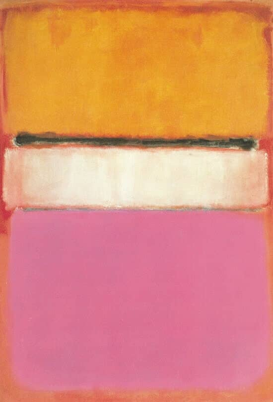
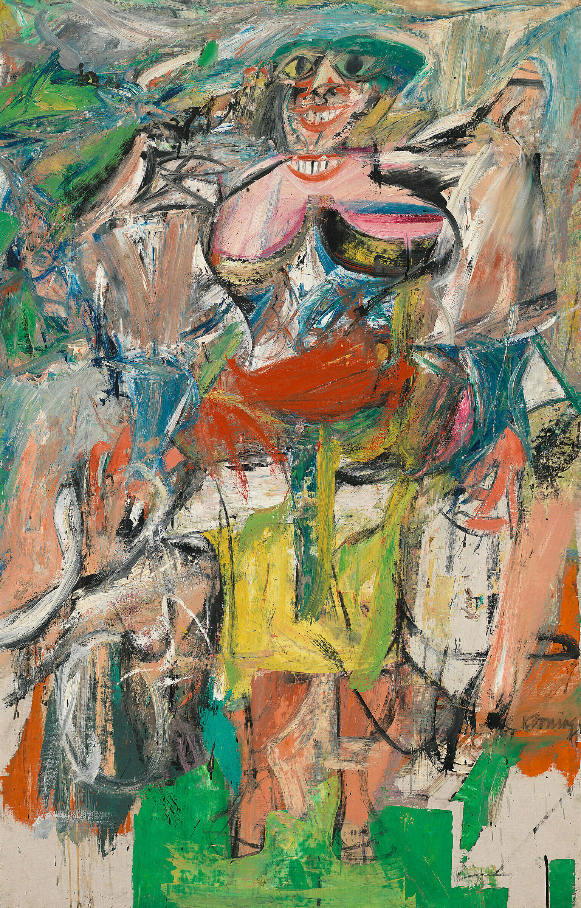
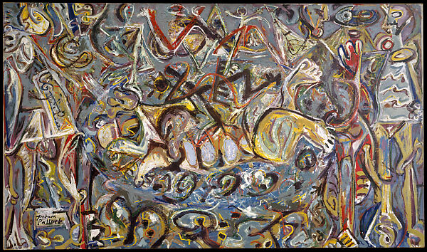
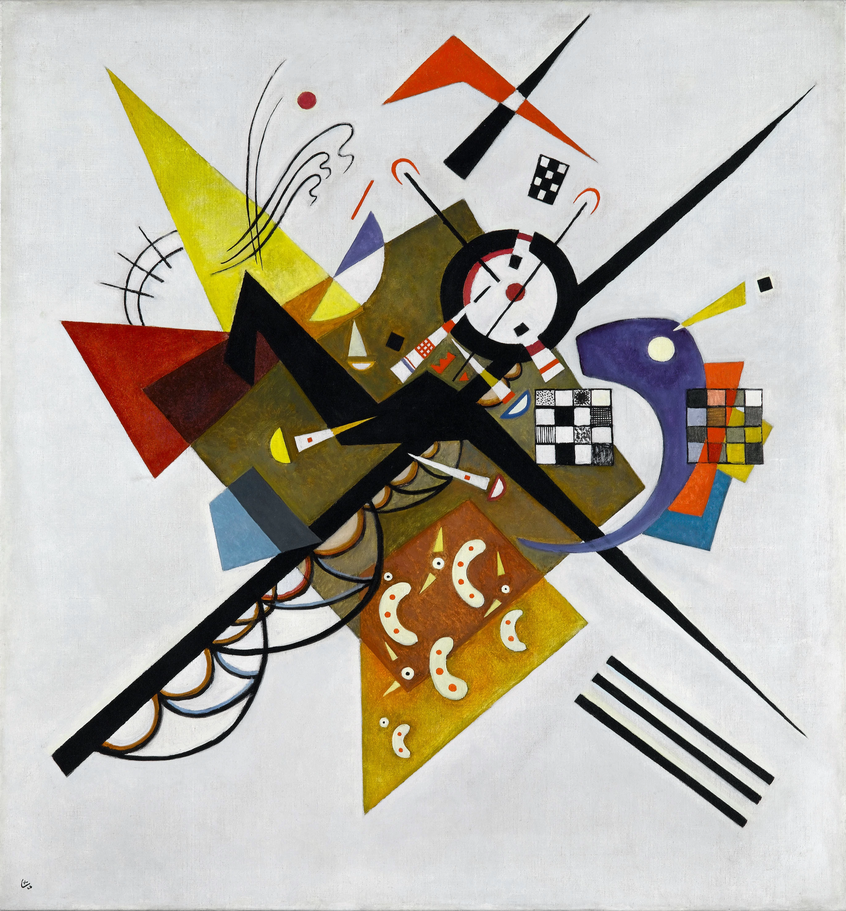

ABSTRACT EXPRESSIONISM
Western art had been, from the Renaissance up to the middle of the 19th century, underpinned by the logic of perspective and an attempt to reproduce an illusion of visible reality. By the end of the 19th century many artists felt a need to create a new kind of art which would encompass the fundamental changes taking place in technology, science and philosophy.




The first generation of Abstract Expressionism flourished between 1943 and the mid-1950s. Artists associated with the movement combined the emotional intensity of German Expressionism with the radical visual vocabularies of European avant-garde schools like Futurism, the Bauhaus, and Synthetic Cubism.
end your journey:
the finale!
Simple Div Link
Learn more about abstract expressionism here